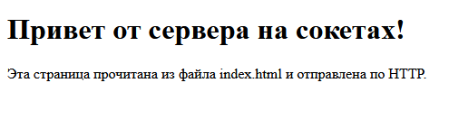
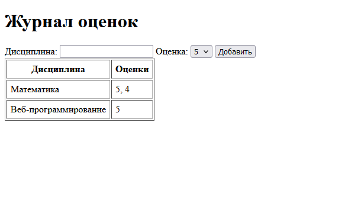

Лабораторная работа 1. Работа с сокетами
Студент: Смирнов Фёдор, группа K3340.
Цель работы: понять принципы взаимодействия через сокеты и научиться реализовывать базовую архитектуру клиент-сервер.
Задания выполнены на Python с библиотекой socket, в чате дополнительно используется threading. Каждое задание лежит в своей папке students/K3340/Smirnov_Fedor/laboratory_work_1/<папка>. Сервер и клиент запускаются в разных терминалах, сначала сервер.
Задание 1. Обмен сообщениями по UDP
Клиент отправляет серверу «Hello, server», сервер выводит сообщение и отвечает «Hello, client».
UDP работает без соединения, поэтому у сервера нет listen() и accept(). Сервер ждёт датаграмму в recvfrom(), который возвращает данные и адрес отправителя, и отвечает на этот адрес через sendto().
import socket
ADDRESS = ("localhost", 5001)
with socket.socket(socket.AF_INET, socket.SOCK_DGRAM) as sock:
sock.bind(ADDRESS)
print("UDP-сервер запущен на", ADDRESS)
while True:
data, address = sock.recvfrom(1024)
print(f"Получено от {address}: {data.decode()}")
sock.sendto("Hello, client".encode(), address)
import socket
ADDRESS = ("localhost", 5001)
with socket.socket(socket.AF_INET, socket.SOCK_DGRAM) as sock:
sock.sendto("Hello, server".encode(), ADDRESS)
data, _ = sock.recvfrom(1024)
print(f"Ответ сервера: {data.decode()}")
> python 1_udp/server.py
UDP-сервер запущен на ('localhost', 5001)
Получено от ('127.0.0.1', 63117): Hello, server
> python 1_udp/client.py
Ответ сервера: Hello, client
Задание 2. Вычисления через TCP
Номер в списке 27, вариант 3: площадь трапеции S = (a + b) / 2 * h.
Клиент запрашивает с клавиатуры основания и высоту и отправляет их одной строкой через пробел. Сервер принимает соединение через accept(), считает площадь и отправляет результат строкой. Если пришли не три числа или значения не положительные, сервер возвращает текст ошибки.
import socket
ADDRESS = ("localhost", 5002)
def trapezoid_area(a, b, h):
return (a + b) / 2 * h
with socket.socket(socket.AF_INET, socket.SOCK_STREAM) as sock:
sock.bind(ADDRESS)
sock.listen()
print("TCP-сервер запущен на", ADDRESS)
while True:
conn, address = sock.accept()
with conn:
request = conn.recv(1024).decode()
print(f"{address}: {request}")
try:
a, b, h = map(float, request.split())
if min(a, b, h) <= 0:
answer = "Ошибка: основания и высота должны быть больше нуля"
else:
answer = f"Площадь трапеции: {trapezoid_area(a, b, h)}"
except ValueError:
answer = "Ошибка: нужно передать три числа"
conn.sendall(answer.encode())
import socket
ADDRESS = ("localhost", 5002)
print("Площадь трапеции: S = (a + b) / 2 * h")
a = input("Основание a: ")
b = input("Основание b: ")
h = input("Высота h: ")
with socket.socket(socket.AF_INET, socket.SOCK_STREAM) as sock:
sock.connect(ADDRESS)
sock.sendall(f"{a} {b} {h}".encode())
print(sock.recv(1024).decode())
> python 2_tcp/client.py
Площадь трапеции: S = (a + b) / 2 * h
Основание a: 3
Основание b: 5
Высота h: 4
Площадь трапеции: 16.0
> python 2_tcp/client.py
Площадь трапеции: S = (a + b) / 2 * h
Основание a: 3
Основание b: 5
Высота h: -4
Ошибка: основания и высота должны быть больше нуля
Задание 3. HTML-страница по HTTP
Сервер читает index.html и отправляет его браузеру в HTTP-ответе: строка статуса, заголовки, пустая строка и тело. Файл читается в байтах, потому что Content-Length указывается в байтах.
import socket
from pathlib import Path
ADDRESS = ("localhost", 8080)
PAGE = Path(__file__).parent / "index.html"
with socket.socket(socket.AF_INET, socket.SOCK_STREAM) as sock:
sock.bind(ADDRESS)
sock.listen()
print("HTTP-сервер запущен: http://localhost:8080")
while True:
conn, address = sock.accept()
with conn:
request = conn.recv(1024).decode()
print(address, request.split("\r\n")[0])
body = PAGE.read_bytes()
headers = (
"HTTP/1.1 200 OK\r\n"
"Content-Type: text/html; charset=utf-8\r\n"
f"Content-Length: {len(body)}\r\n"
"Connection: close\r\n"
"\r\n"
)
conn.sendall(headers.encode() + body)
<!DOCTYPE html>
<html lang="ru">
<head>
<meta charset="utf-8">
<title>Лабораторная работа 1</title>
</head>
<body>
<h1>Привет от сервера на сокетах!</h1>
<p>Эта страница прочитана из файла index.html и отправлена по HTTP.</p>
</body>
</html>
Страница по адресу http://localhost:8080:

> python 3_http/server.py
HTTP-сервер запущен: http://localhost:8080
('127.0.0.1', 19402) GET / HTTP/1.1
('127.0.0.1', 19404) GET /favicon.ico HTTP/1.1
Задание 4. Многопользовательский чат
Чат работает по TCP. Сервер принимает подключения в главном потоке и для каждого клиента запускает отдельный поток. Подключённые пользователи хранятся в словаре, где сокету каждого клиента соответствует его имя. Доступ к словарю защищён блокировкой threading.Lock.
Первым сообщением клиент отправляет своё имя. Остальные сообщения сервер рассылает всем, кроме отправителя, в виде имя: текст. Команда /exit завершает сеанс. В клиенте сообщения принимаются в отдельном потоке, пока основной поток ждёт ввод.
import socket
import threading
ADDRESS = ("localhost", 5004)
users = {}
lock = threading.Lock()
def send_all(text, sender=None):
with lock:
receivers = [conn for conn in users if conn is not sender]
for conn in receivers:
try:
conn.sendall((text + "\n").encode())
except OSError:
pass
def serve(conn, address):
name = conn.recv(1024).decode().strip()
with lock:
users[conn] = name
print(f"Подключение: {name} {address}")
send_all(f"{name} присоединяется к чату", conn)
try:
while True:
text = conn.recv(1024).decode().strip()
if not text or text == "/exit":
break
print(f"{name}: {text}")
send_all(f"{name}: {text}", conn)
except ConnectionError:
pass
finally:
with lock:
del users[conn]
conn.close()
print(f"Отключение: {name}")
send_all(f"{name} покидает чат")
with socket.socket(socket.AF_INET, socket.SOCK_STREAM) as sock:
sock.bind(ADDRESS)
sock.listen()
print("Чат запущен на", ADDRESS)
while True:
conn, address = sock.accept()
threading.Thread(target=serve, args=(conn, address), daemon=True).start()
import socket
import threading
ADDRESS = ("localhost", 5004)
def receive(sock):
while True:
try:
data = sock.recv(1024)
except OSError:
break
if not data:
print("Сервер закрыл соединение")
break
print(data.decode(), end="")
sock = socket.socket(socket.AF_INET, socket.SOCK_STREAM)
sock.connect(ADDRESS)
sock.sendall(input("Ваше имя: ").encode())
threading.Thread(target=receive, args=(sock,), daemon=True).start()
print("Вы в чате. Для выхода введите /exit")
while True:
message = input()
if not message.strip():
continue
try:
sock.sendall(message.encode())
except OSError:
print("Сервер недоступен")
break
if message == "/exit":
break
sock.close()
Три пользователя запустили один и тот же client.py, Борис вышел командой /exit:
> python 4_chat/client.py
Ваше имя: Фёдор
Вы в чате. Для выхода введите /exit
Анна присоединяется к чату
Борис присоединяется к чату
Всем привет!
Анна: Привет, Фёдор
Борис покидает чат
Борис вышел, мы остались вдвоём
> python 4_chat/server.py
Чат запущен на ('localhost', 5004)
Подключение: Фёдор ('127.0.0.1', 19375)
Подключение: Анна ('127.0.0.1', 19376)
Подключение: Борис ('127.0.0.1', 19377)
Фёдор: Всем привет!
Анна: Привет, Фёдор
Отключение: Борис
Фёдор: Борис вышел, мы остались вдвоём
Задание 5. Веб-сервер для журнала оценок
Сервер сделан на основе класса MyHTTPServer из материалов к заданию. Запрос разбирается вручную: первая строка, заголовки до пустой строки и тело длиной Content-Length.
На запрос GET / сервер отдаёт страницу с формой и журналом и код 200 OK. Запрос POST / приходит из формы с дисциплиной и оценкой: сервер сохраняет оценку и отвечает 303 See Other с заголовком Location: /, после чего браузер снова загружает главную страницу. Если дисциплина пустая или оценка не от 2 до 5, сервер ничего не сохраняет и отвечает 400 Bad Request. На любой другой адрес приходит 404 Not Found.
Журнал хранится в словаре, в котором для каждой дисциплины записан список её оценок: {"Математика": [5, 4]}. Поэтому у каждой дисциплины одна строка в таблице.
import socket
from urllib.parse import parse_qs
class MyHTTPServer:
def __init__(self, host, port):
self.host = host
self.port = port
self.grades = {}
def serve_forever(self):
server_socket = socket.socket(socket.AF_INET, socket.SOCK_STREAM)
server_socket.bind((self.host, self.port))
server_socket.listen(5)
print(f"Сервер запущен: http://{self.host}:{self.port}")
while True:
client_socket, client_address = server_socket.accept()
self.serve_client(client_socket)
def serve_client(self, client_socket):
rfile = client_socket.makefile("rb")
try:
method, path, version = self.parse_request(rfile)
headers = self.parse_headers(rfile)
content_length = int(headers.get("Content-Length", 0))
body = rfile.read(content_length).decode()
print(f"Запрос: {method} {path}")
self.handle_request(client_socket, method, path, body)
except Exception as error:
print(f"Не удалось обработать запрос: {error}")
finally:
rfile.close()
client_socket.close()
def parse_request(self, rfile):
request_line = rfile.readline().decode().strip()
parts = request_line.split()
if len(parts) != 3:
raise ValueError("некорректная строка запроса")
method, path, version = parts
return method, path, version
def parse_headers(self, rfile):
headers = {}
while True:
line = rfile.readline().decode().strip()
if not line:
break
name, value = line.split(":", 1)
headers[name.strip()] = value.strip()
return headers
def handle_request(self, client_socket, method, path, body):
if method == "GET" and path == "/":
self.send_response(client_socket, "200 OK", self.render_page())
elif method == "POST" and path == "/":
params = parse_qs(body)
discipline = params.get("discipline", [""])[0].strip()
grade = params.get("grade", [""])[0]
if not discipline or grade not in ("2", "3", "4", "5"):
self.send_response(
client_socket,
"400 Bad Request",
"<h1>400 Bad Request</h1><p>Нужны дисциплина и оценка от 2 до 5</p>",
)
return
if discipline not in self.grades:
self.grades[discipline] = []
self.grades[discipline].append(int(grade))
print(f"Добавлена оценка: {discipline} - {grade}")
self.send_response(client_socket, "303 See Other", "", location="/")
else:
self.send_response(client_socket, "404 Not Found", "<h1>404 Not Found</h1>")
def send_response(self, client_socket, status, body, location=None):
body_bytes = body.encode()
response = f"HTTP/1.1 {status}\r\n"
response += "Content-Type: text/html; charset=utf-8\r\n"
response += f"Content-Length: {len(body_bytes)}\r\n"
response += "Connection: close\r\n"
if location:
response += f"Location: {location}\r\n"
response += "\r\n"
client_socket.sendall(response.encode() + body_bytes)
def render_page(self):
rows = ""
for discipline, grades in self.grades.items():
grades_text = ", ".join(str(grade) for grade in grades)
rows += f"<tr><td>{discipline}</td><td>{grades_text}</td></tr>\n"
if not rows:
rows = '<tr><td colspan="2">Оценок пока нет</td></tr>'
return f"""<!DOCTYPE html>
<html lang="ru">
<head>
<meta charset="utf-8">
<title>Журнал оценок</title>
</head>
<body>
<h1>Журнал оценок</h1>
<form method="POST" action="/">
<label>Дисциплина: <input type="text" name="discipline" required></label>
<label>Оценка:
<select name="grade">
<option>5</option>
<option>4</option>
<option>3</option>
<option>2</option>
</select>
</label>
<button type="submit">Добавить</button>
</form>
<table border="1" cellpadding="6">
<tr><th>Дисциплина</th><th>Оценки</th></tr>
{rows}
</table>
</body>
</html>"""
if __name__ == "__main__":
server = MyHTTPServer("localhost", 8081)
server.serve_forever()
Добавлены оценки 5 и 4 по математике и 5 по веб-программированию:

> python 5_journal/server.py
Сервер запущен: http://localhost:8081
Запрос: GET /
Запрос: GET /favicon.ico
Запрос: POST /
Добавлена оценка: Математика - 5
Запрос: GET /
Запрос: GET /favicon.ico
Запрос: POST /
Добавлена оценка: Математика - 4
Запрос: GET /
Запрос: GET /favicon.ico
Запрос: POST /
Добавлена оценка: Веб-программирование - 5
Запрос: GET /
Запрос: GET /favicon.ico
Вывод
В работе реализованы обмен сообщениями по UDP и TCP, отдача HTML-страницы по HTTP, многопользовательский чат на потоках и веб-сервер с обработкой GET и POST. UDP отправляет данные без соединения, TCP сначала устанавливает его, а HTTP передаётся поверх TCP обычным текстом, который можно разобрать и собрать вручную.